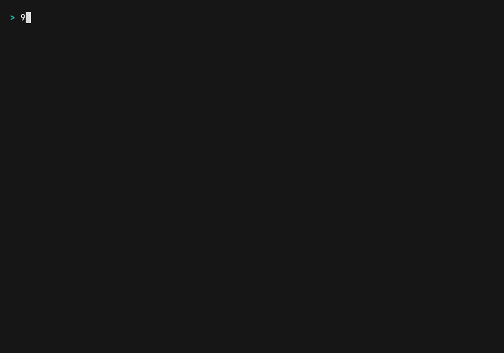

One launcher for
Claude Code, Pi,
and Hermes.
Pick a model from your gateway, launch the agent, optionally in Docker. No session manager, no proxy — it execs the agent and gets out of the way.
$ npm i -g 9agent $ 9agent # prompts: agent → model → mode

Skip the prompts
Every prompt has a flag. Scriptable end to end.
$ 9agent -a claude -m ag/gemini-3.7-flash-high --yolo $ 9agent -a claude -m ag/gemini-3.7-flash-high --yes safe --sandbox $ 9agent -a claude -m ag/gemini-3.7-flash-high --yes safe -- --verbose # passthrough
Requirements
| Need | Why |
|---|---|
| Node >= 20 | fetch, import.meta |
| A gateway | Serving GET /v1/models — where the model list comes from. Built for 9Router; anything OpenAI-compatible works |
| An agent | One of claude, pi, hermes. 9agent launches these, it doesn't bundle them |
| Docker | Only for --sandbox |
No gateway? You get Is 9Router running? and exit 1 — never a hang.
Flags
| Flag | Description | Default |
|---|---|---|
| -a, --agent | claude|pi|hermes, or alias c/cc/p/h | picker |
| -m, --model | Model id | searchable picker |
| --sandbox | Run the agent in Docker | host |
| --yolo | Skip permission prompts | safe |
| --yes <mode> | Non-interactive: safe|dangerous | — |
| --gateway <url> | Gateway base URL | http://localhost:20128/v1 |
| --key <token> | Gateway key | sk_9router placeholder |
| --print-only | Print the resolved env + argv, spawn nothing | — |
| -V, --version | Print version | — |
The gateway URL comes from --gateway, else NINEROUTER_URL. The key comes from --key, else NINEROUTER_KEY, else LOCAL_9ROUTER_KEY, else the sk_9router placeholder — a local placeholder, not a credential.
Agents
| Agent | --yolo becomes | Gateway routing |
|---|---|---|
| Claude Code | --dangerously-skip-permissions | env vars |
| Pi | nothing — Pi has no permission system | ~/.pi/agent/models.json |
| Hermes | --yolo | 9router provider in ~/.hermes/config.yaml |
Pi and Hermes have no env var for the base URL, so the gateway must already be in their config. 9agent reads those files; it never writes them.
Sandbox
A blast-radius limiter, not a security boundary against a hostile agent.
$ 9agent -a claude -m ag/gemini-3.7-flash-high --yes safe --sandbox
Only cwd and the agent home are mounted, and anything your host executes — hooks, plugins, settings — is mounted read-only. The full threat model has the per-agent details and known limits.
Design
9agent resolves a model, execs the agent, and mirrors its exit code. It is not a session manager and not a config broker. Two rules follow:
Never rewrites a config you own
Config-driven agents get a ShadowConfig copy instead.
Never supervises what it starts
No wrapping, no proxying, no restarts — so exit codes and signals are the agent's own.
CONTEXT.md is the vocabulary. ADR-0001 records what this trades away.